Index des entités
Repères biographiques, lieux, organisations et œuvres cités dans les lettres.
Individus
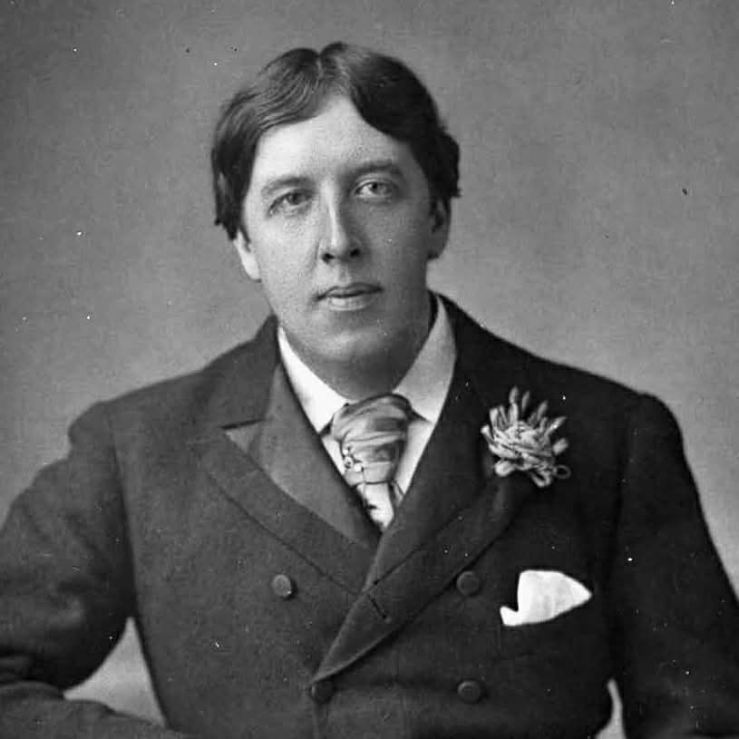
Oscar Wilde alias Sebastian MelmothOscar Wilde (1854–1900) est un écrivain irlandais formé au Trinity College de Dublin puis à Oxford. Figure marquante de la vie littéraire londonienne des années 1890, il connaît un succès considérable grâce à ses comédies de mœurs (Lady Windermere’s Fan, A Woman of No Importance, An Ideal Husband, The Importance of Being Earnest) ainsi qu’à son roman The Picture of Dorian Gray (1890–1891). Son œuvre se distingue par un usage élaboré de l’ironie, une critique des normes morales et sociales victoriennes et une conception de l’art comme valeur autonome. En 1895, il est poursuivi et condamné pour « gross indecency », qualification juridique introduite par le Criminal Law Amendment Act (1885) visant les relations sexuelles entre hommes. Il est condamné à deux ans de travaux forcés et incarcéré notamment à Reading Gaol. Après sa libération en 1897, il s’exile en France sous le nom de Sebastian Melmoth. Les lettres ici éditées s’inscrivent dans la période précédant et suivant son emprisonnement.
Cité.e dans : John Lane · Major Nelson · Henrietta Stannard
 John Lane
John LaneJohn Lane (1854–1925) est un éditeur britannique, cofondateur en 1887, avec Elkin Mathews, de la maison d’édition londonienne The Bodley Head. Cette maison devient un acteur central de la diffusion de la littérature esthète et décadente dans les années 1890. Lane publie notamment Oscar Wilde, Aubrey Beardsley, W. B. Yeats et Ernest Dowson. Après la séparation d’avec Mathews en 1894, il conserve le nom et le catalogue de The Bodley Head et développe une ligne éditoriale marquée par une forte attention à la matérialité du livre (typographie, illustration, mise en page). Dans la correspondance de 1894, il intervient comme éditeur de Wilde pour la correction d’épreuves, la fixation des prix, les modalités de tirage et les questions de copyright international.
Cité.e dans : John Lane ·
-
Major J. O. Nelson
Major J. O. Nelson est gouverneur de Reading Gaol au moment de l’incarcération d’Oscar Wilde (1895–1897). En tant que responsable administratif de l’établissement, il supervise l’application du régime disciplinaire et du travail forcé. La lettre adressée à Nelson en mai 1897, après la libération de Wilde, exprime une gratitude personnelle pour certaines marques de bienveillance et constitue un témoignage rare sur les relations entre détenu et autorité pénitentiaire dans le système carcéral victorien.
Cité.e dans : Major Nelson ·
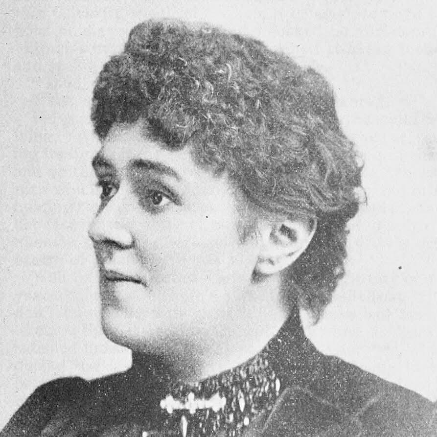
Henrietta StannardHenrietta Stannard (1836–1911), écrivaine britannique connue sous le pseudonyme de « John Strange Winter », est une romancière populaire de la fin du XIXe siècle. Son œuvre, souvent centrée sur les milieux militaires et les valeurs patriotiques, connaît un large succès éditorial. La lettre que Wilde lui adresse en 1897 témoigne d’un réseau de sociabilités littéraires et d’un soutien moral reçu durant son exil en France. Elle éclaire également la circulation des solidarités dans le champ littéraire victorien après le scandale de 1895.
Cité.e dans : Henrietta Stannard ·
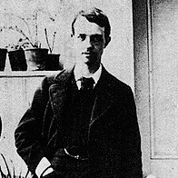
Robert RossRobert Baldwin Ross (1869–1918) est un journaliste et critique d’art canadien, proche d’Oscar Wilde. Ami intime et soutien constant durant le procès et l’emprisonnement, il joue un rôle essentiel dans la préservation et la publication posthume de l’œuvre de Wilde. Après la mort de ce dernier en 1900, Ross devient son exécuteur littéraire et contribue à stabiliser le texte de plusieurs œuvres et à défendre sa mémoire face aux polémiques morales de l’époque.
Cité.e dans : Major Nelson ·
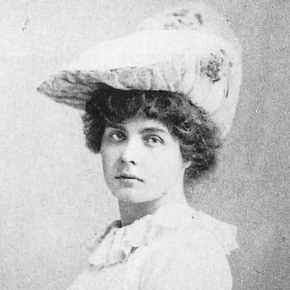
Constance WildeConstance Lloyd, dite Constance Wilde (1859–1898), est l’épouse d’Oscar Wilde depuis 1884. Elle participe activement à la vie intellectuelle et littéraire londonienne et publie notamment des ouvrages pour la jeunesse. Après la condamnation de son mari en 1895, elle s’installe sur le continent européen avec leurs deux fils et adopte le nom de Constance Holland afin de se distancier du scandale. Elle est mentionnée dans la correspondance en lien avec des projets éditoriaux et anthologiques.
Cité.e dans : John Lane ·
-
Charles Elkin Mathews
Elkin Mathews (1851–1921) est un éditeur britannique, cofondateur avec John Lane de The Bodley Head en 1887. Après leur séparation en 1894, il poursuit une activité éditoriale indépendante, publiant de nombreux poètes associés au mouvement décadent et symboliste. Son nom apparaît dans la correspondance de Wilde en lien avec des arrangements éditoriaux et des négociations commerciales.
Cité.e dans : John Lane ·
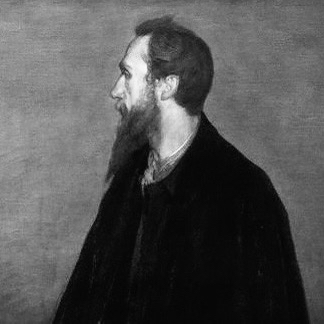
Charles RickettsCharles Ricketts (1866–1931) est un artiste, illustrateur, typographe et éditeur britannique associé au mouvement décadent. Proche d’Oscar Wilde, il participe à l’esthétique du livre fin-de-siècle et cofonde la Vale Press, spécialisée dans l’édition soignée de textes littéraires. Son intérêt pour la mise en page, la typographie et l’ornementation contribue à l’essor du livre comme objet d’art dans les années 1890.
Cité.e dans : John Lane ·
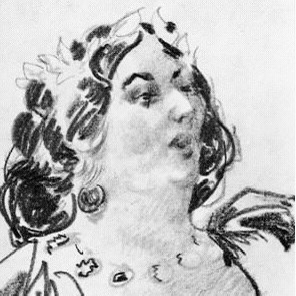
Jane WildeJane Francesca Wilde (1821–1896), connue sous le pseudonyme « Speranza », est une poétesse et nationaliste irlandaise, mère d’Oscar Wilde. Engagée dans le mouvement du Young Ireland, elle publie des poèmes et des articles politiques. Son influence intellectuelle et culturelle sur son fils est fréquemment soulignée par les biographes. Elle est évoquée dans la correspondance comme figure familiale et morale dans le contexte des épreuves traversées par Wilde.
Cité.e dans : Henrietta Stannard ·
Lieux
Pays
- France
Pays où Wilde se réfugie après sa libération. La France lui offre un cadre d’exil et une distance avec la presse britannique. Il y séjourne surtout en Normandie, puis à Paris (1897–1900).
Cité.e dans : Henrietta Stannard ·
- United States of America
Les États-Unis sont mentionnés à propos de la protection du droit d’auteur. À la fin du XIXe siècle, l’enregistrement du copyright américain représente un enjeu financier, car il limite les éditions non autorisées.
Cité.e dans : John Lane ·
Villes et lieux
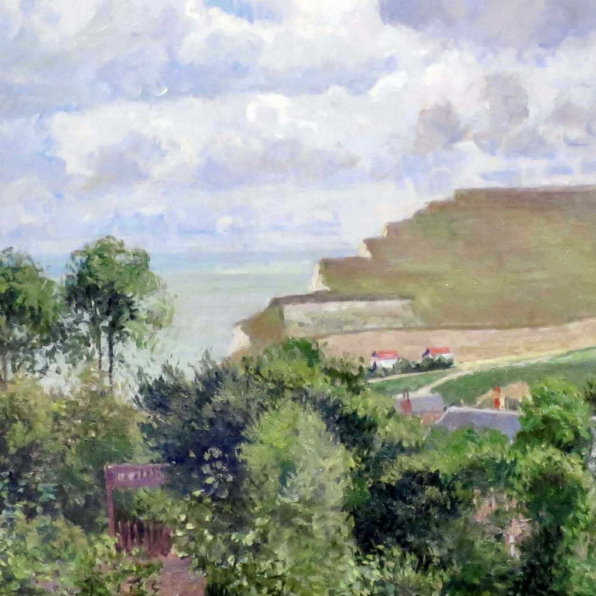
Berneval-sur-MerLocalité littorale de Seine-Maritime, près de Dieppe. Wilde s’y installe après sa libération de Reading Gaol (mai 1897). Il loge notamment à l’Hôtel de la Plage. Ce séjour ouvre son exil continental et l’usage du nom « Sebastian Melmoth ». Les lettres à Major Nelson et à Henrietta Stannard y sont rédigées.
Cité.e dans : Major Nelson · Henrietta Stannard
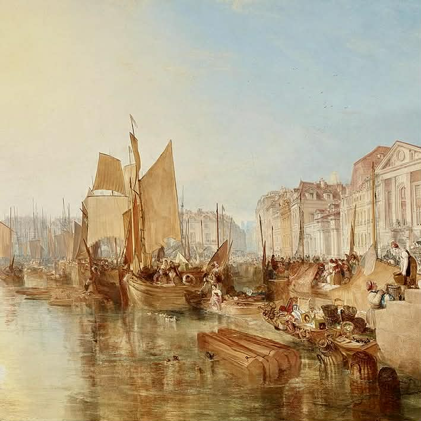
DieppePort normand sur la Manche, lié aux circulations transmanche. Dans la lettre à Nelson, la mention « Près de Dieppe » sert de repère pour situer le lieu de séjour de Wilde en 1897.
Cité.e dans : Major Nelson
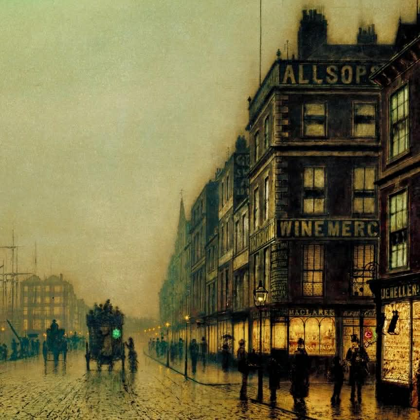
LiverpoolVille portuaire majeure du nord-ouest de l’Angleterre. Wilde cite Liverpool à propos de la réception de A Woman of No Importance. Il évoque des conférences et des sermons polémiques, ce qui signale l’écho moral et social de sa pièce hors de Londres.
Cité.e dans : John Lane ·
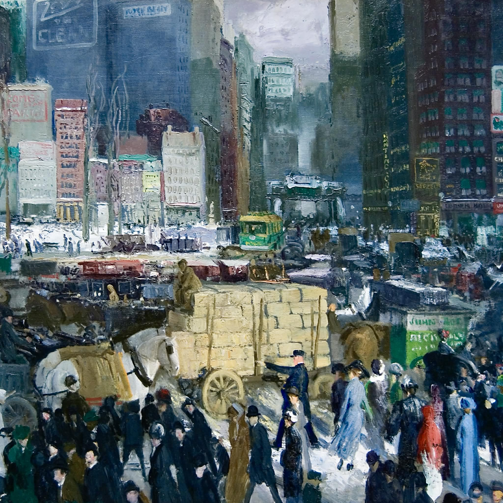
New YorkGrand centre éditorial américain à la fin du XIXe siècle. L’envoi d’épreuves à New York vise à assurer l’enregistrement du copyright avant la diffusion.
Cité.e dans : John Lane ·
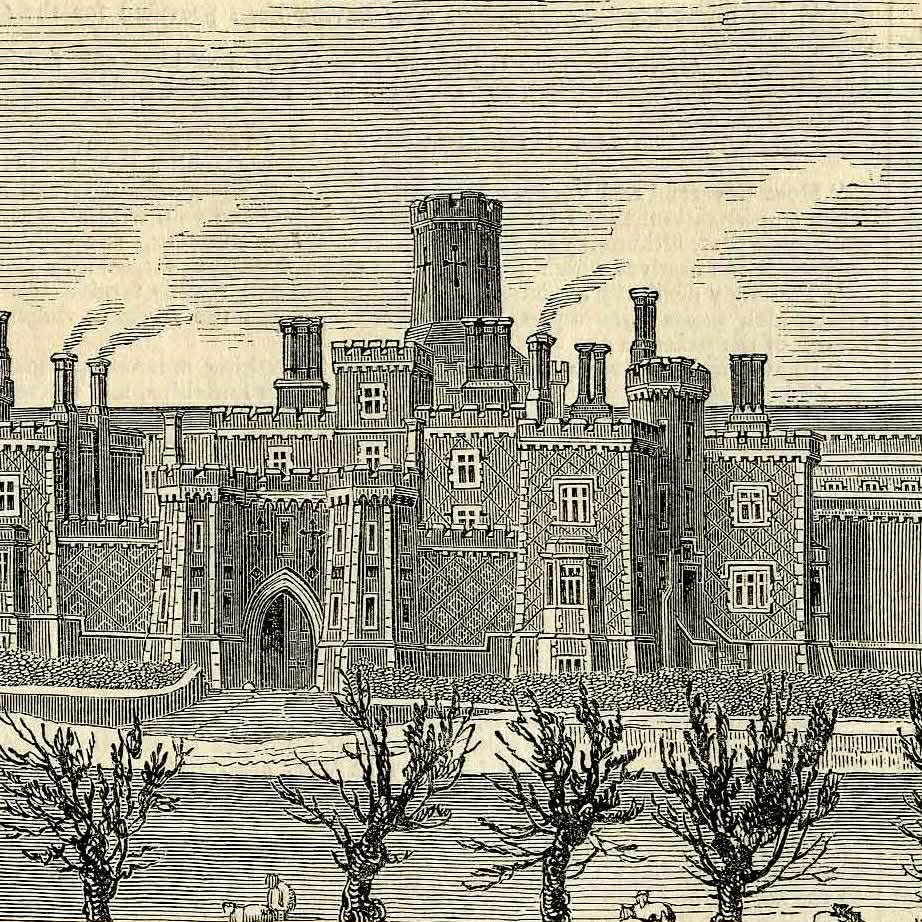
Reading GaolPrison ouverte en 1844 à Reading (Berkshire). Wilde y est détenu de novembre 1895 à mai 1897 après sa condamnation pour « gross indecency ». L’incarcération à Reading marque un tournant durable. Elle nourrit ensuite De Profundis et The Ballad of Reading Gaol.
Cité.e dans : Major Nelson ·
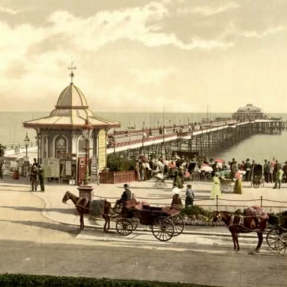
WorthingVille côtière du West Sussex, sur la Manche. À la fin du XIXe siècle, Worthing devient une station balnéaire prisée par une clientèle londonienne. Wilde y séjourne à l’été 1894 (5 Esplanade). Il y rédige en août 1894 sa lettre à John Lane au sujet des épreuves, des modalités de publication et des droits.
Cité.e dans : John Lane
Organisations
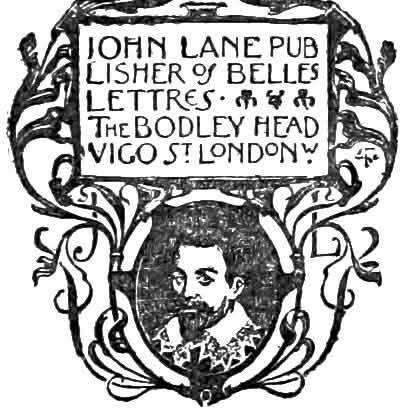
The Bodley HeadAprès la séparation de Lane et Mathews en 1894, John Lane conserve le nom et développe seul la maison d’édition. The Bodley Head publie notamment Oscar Wilde, Aubrey Beardsley, W. B. Yeats, Ernest Dowson et d’autres figures associées aux cercles esthètes londoniens. Dans la lettre adressée à John Lane depuis Worthing (août 1894), Wilde évoque explicitement The Bodley Head comme cadre éditorial privilégié pour la publication de ses pièces, en insistant sur la cohérence de la série dramatique et sur les questions de tirage, de prix et de copyright international. L’association entre Wilde et The Bodley Head s’inscrit dans un moment de forte visibilité publique de l’auteur, antérieur au scandale de 1895, et témoigne des enjeux économiques et symboliques de l’édition fin-de-siècle.
Cité.e dans : John Lane ·
Œuvres
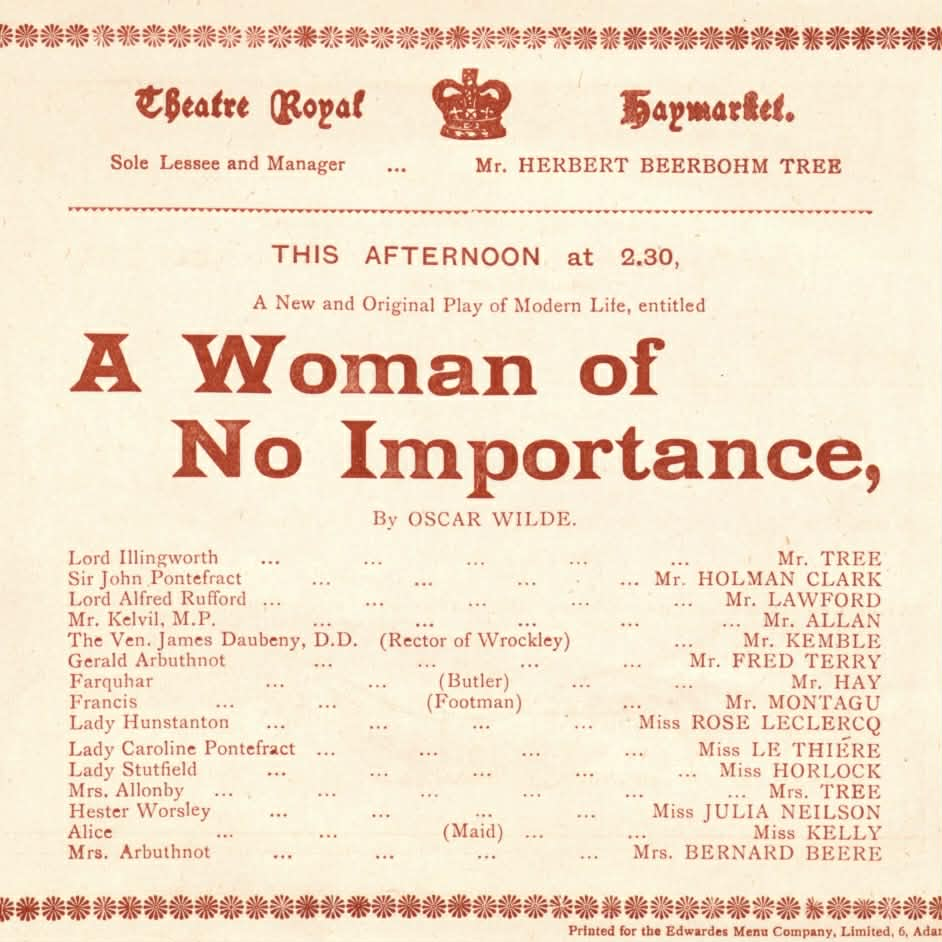
A Woman of No ImportanceComédie en quatre actes créée au Haymarket Theatre de Londres en avril 1893. L’action se déroule dans la haute société anglaise et suit Gerald Arbuthnot, jeune homme ambitieux auquel Lord Illingworth propose un poste prestigieux. La mère de Gerald, Mrs Arbuthnot, refuse cette offre lorsqu’elle reconnaît en Illingworth l’homme qui l’a séduite et abandonnée dans sa jeunesse et qui est en réalité le père de son fils. La révélation de ce secret met en lumière les contradictions morales de la société victorienne, où la réputation d’une femme peut être détruite alors que les hommes échappent aux mêmes jugements. La pièce mêle satire mondaine, intrigue familiale et critique sociale des doubles standards moraux. Wilde mentionne cette œuvre dans sa correspondance avec John Lane à propos des démarches nécessaires pour assurer la protection du copyright lors de la publication aux États-Unis.
Cité.e dans : John Lane ·
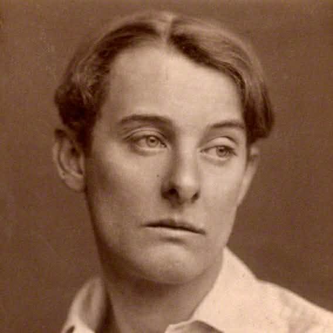
De ProfundisLongue lettre rédigée par Wilde à Reading Gaol en 1897 et adressée à Lord Alfred Douglas. Le texte mêle confession personnelle, réflexion spirituelle et analyse critique de la relation qui liait les deux hommes avant les procès de 1895. Wilde y médite sur la souffrance, la responsabilité individuelle et la possibilité d’une transformation intérieure à travers l’expérience de la prison. L’œuvre, publiée partiellement en 1905 par Robert Ross, constitue le témoignage le plus important de l’expérience carcérale de l’auteur.
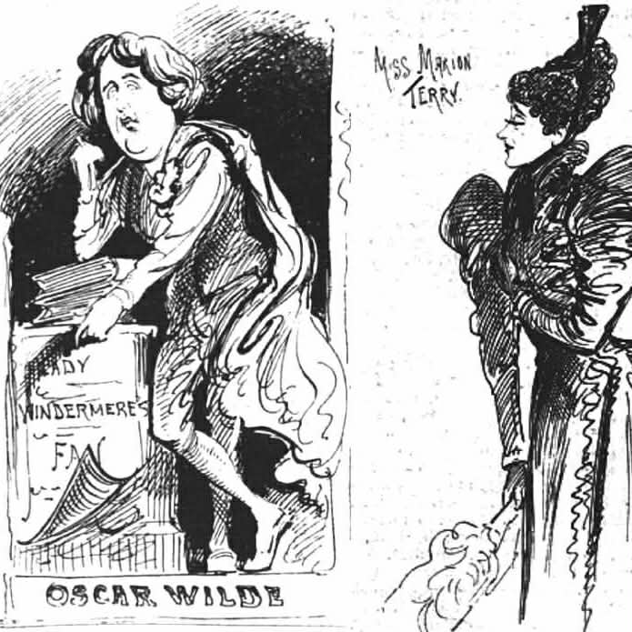
Lady Windermere’s FanComédie créée au St James’s Theatre de Londres en février 1892. L’intrigue commence lorsque Lady Windermere soupçonne son mari d’entretenir une relation secrète avec Mrs Erlynne, femme compromise dans la haute société londonienne. Persuadée d’être trahie, elle envisage de quitter son foyer. La situation se renverse lorsque Mrs Erlynne révèle qu’elle est en réalité la mère de Lady Windermere, autrefois rejetée par la société et contrainte de vivre sous une identité différente. Elle se sacrifie alors pour préserver la réputation de sa fille et sauver son mariage. La pièce explore les thèmes de la respectabilité sociale, de la faute et du pardon, tout en offrant une satire brillante des conventions victoriennes.
Cité.e dans : John Lane ·
- Oscariana
Recueil d’aphorismes et d’extraits tirés des œuvres d’Oscar Wilde, compilé par Constance Wilde et publié en 1895. L’ouvrage rassemble des passages caractéristiques du style paradoxal et spirituel de l’auteur, provenant notamment de ses pièces de théâtre, essais et dialogues. En isolant ces formules brillantes, le livre contribue à diffuser l’image publique de Wilde comme maître de l’épigramme et figure majeure du mouvement esthète. La correspondance avec John Lane évoque ce projet éditorial à propos du choix des extraits et des autorisations nécessaires à la publication.
Cité.e dans : John Lane ·
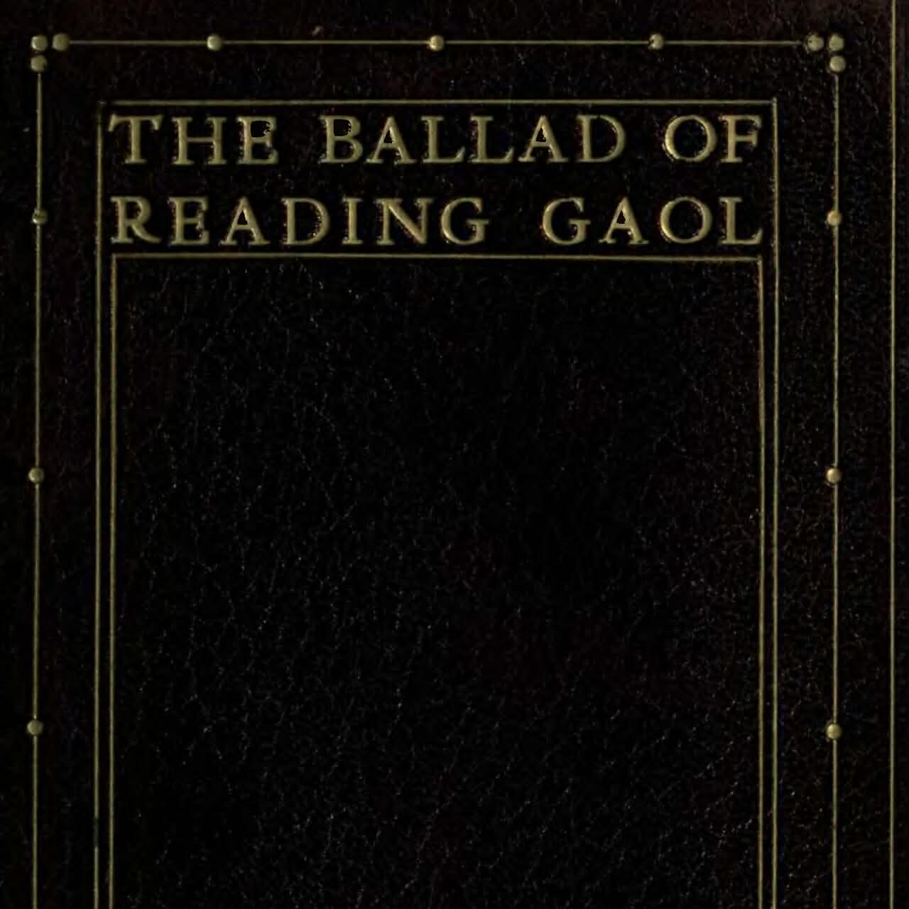
The Ballad of Reading GaolPoème narratif publié en 1898 sous la signature « C.3.3. », numéro matricule de Wilde à Reading Gaol. L’œuvre raconte l’exécution d’un prisonnier condamné pour meurtre et décrit la vie quotidienne dans l’univers carcéral. Le texte transforme l’expérience de l’incarcération en méditation poétique sur la culpabilité, la souffrance et la justice pénale.
- The Case of Warder Martin: Some Cruelties of Prison Life
Brochure publiée anonymement en 1896 dénonçant certaines pratiques du système pénitentiaire britannique. Le texte décrit les conditions de détention et critique la dureté du régime disciplinaire appliqué aux prisonniers. Il s’inscrit dans les débats contemporains sur la réforme des prisons et constitue un arrière-plan important pour comprendre la lettre adressée par Wilde à Major Nelson après sa libération de Reading Gaol.
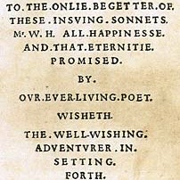
The Portrait of Mr. W. H.Nouvelle publiée en 1889 dans Blackwood’s Edinburgh Magazine, puis remaniée et augmentée en volume en 1891. Le récit met en scène une enquête littéraire autour de l’identité mystérieuse du « Mr. W. H. » auquel seraient dédiés les Sonnets de Shakespeare. Plusieurs personnages défendent l’hypothèse selon laquelle ces poèmes auraient été adressés à un jeune acteur élisabéthain nommé Willie Hughes. Leur démonstration repose sur la découverte supposée d’un portrait ancien représentant ce personnage. L’intrigue révèle progressivement que cette preuve est en réalité une falsification, ce qui transforme l’enquête en réflexion sur la relation entre érudition, imagination critique et désir esthétique. Dans la lettre adressée à John Lane en août 1894, Wilde évoque la possibilité d’une édition distincte de ce texte et discute les modalités d’un tirage limité ainsi que les questions de prix et de diffusion.
Cité.e dans : John Lane ·